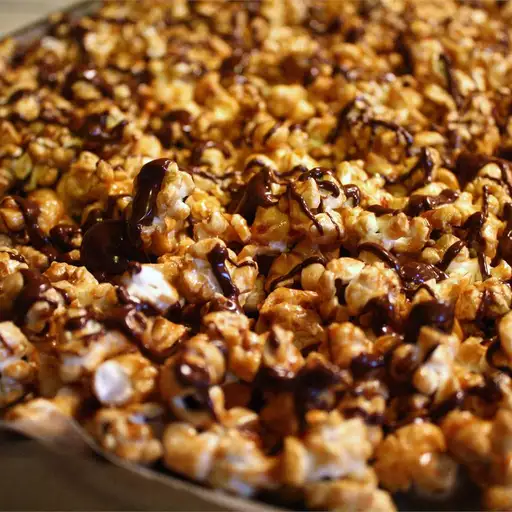

Caramel Chocolate Corn

Description
Once, on a trip through Wisconsin, we stopped at an outlet mall, and I went into a Harry and David store. They had bags upon bags of this amazing-looking chocolate and caramel popcorn. It looked great, but there was no way I would pay $7 for a bag of something I could easily make at home.
Once we got home, I set to work on this equally delicious (and much more frugal) version as a treat for my family. It turned out so yummy and pretty that I thought it would make a great gift for a teacher or friend. It would also be a good addition to any birthday or holiday party. Everyone loves it!
Ingredients
- 16 cups popped popcorn
- 1 cup roasted peanuts
- 1 cup brown sugar
- ½ cup butter
- ¼ cup light corn syrup
- 1 teaspoon vanilla extract
- 1 teaspoon salt
- ½ teaspoon baking soda
- 1 cup milk chocolate chips
- 1 teaspoon shortening
Steps
- Grease cookie sheets.
- Place popcorn and peanuts in a paper bag. Set aside.
- In a microwave safe bowl, combine sugar, butter, corn syrup, vanilla and salt. Microwave 4 minutes, until bubbly. Stir in baking soda. Pour over popcorn mixture and shake bag to coat.
- Roll down edges of bag and place bag in microwave. Heat for 2 minutes, shaking three times to mix. Spread mixture onto prepared sheets to cool.
- In a microwave safe bowl, combine chocolate and shortening. Microwave 90 seconds, stirring once, until melted. Drizzle over popcorn mixture. Let cool before serving.